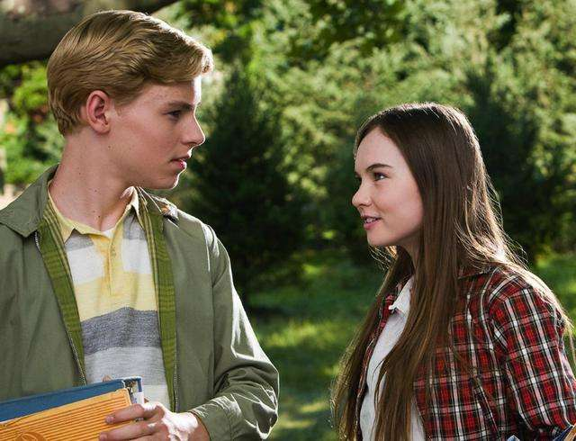

就是那么奇怪。 你总是讨厌她那么粘人，像个没遮没羞的橡皮糖，甜的过于发腻，让自己备受难堪，她能不能收敛一点，能不能别再跟一个满脸写着我最喜欢你的广告牌似的，大大方方的站在那里，毫无畏惧的反而令自己羞耻，这个世界怎么了，太疯狂了，这件事。 就是那么奇怪。 你怎么觉得连他推开你的动作，都是帅气的一气呵成呢，他装着琥珀的眼睛，像是邀请星星跳舞的神仙，如果自己不伸出手应邀就太逊了，可是我该先抓住他的手么，还是先闭上眼，直接承蒙一个吻呢，会是草莓加点胡椒粉的味道么，这真是个难题，太疯狂了，这件事。 别气我不懂，别向我示威。 这件疯狂的小事叫爱情。 噢，或者不是，那应该是什么呢。 管他呢，Anyone Else But You
记得当时年纪小
你爱谈天我爱笑
有一回并肩坐在桃树下
风在林梢鸟儿在叫
我们不知怎样睡着了
梦里花落知多少
年轻的感情不懂得欲擒故纵的高超技巧，却是这一项法门的鼻祖。
不过糟糕的是，他们不是玩游戏的人，反而是被玩的那个，两个人一边嗤之以鼻，一边深陷其中，别讶异重逢，因为本能尴尬的抗拒，又因为本能被致命的吸引，是费洛蒙作怪还是她的发梢太美了，是看电视剧太多了还是他的眼睛里面能看见我了，噢，可真烦，原来小孩子这么不容易，他们会觉得这一件事发生的如此奇怪，“高深”程度犹如月球上为什么不能看到月亮。
不过别担心，很快他们会作出决定，咬一咬牙握一握拳上战场了。
马上就要进行历史的一刻了，好紧张。
跟她道歉。看他眼睛。跟她说话。敲他家的门。换一身好看的衣服。拒绝了那个长的好看的男生。经过她身边终于说了句早安，今晚月亮真圆。终于挥了挥手，然后拐弯进错了厕所。为什么我非要在刚才挖了一下鼻孔还恰巧让她看见呢呢，为什么他连挖鼻孔都那么可爱呢，天，他会不会把我当成一个爱看人挖鼻孔的怪胎。
为什么为什么为什么，噢，太疯狂了，这件事。

很久很久以后，我却庆幸我的小事，让我窥视了整个宇宙。
我庆幸我有过一棵大树，它让我看到了别人看不到的风景。
我庆幸我有一对会在餐桌上唱歌的哥哥，一对会和我解释种种的爸爸妈妈，他们让我觉得我是重要的，亲情是无关事态的寒酸，心中甜美就足够了。我庆幸我遇到一个邻居家可爱的老先生，他帮我修理了草坪，帮我完成了当一个孙女的愿望，帮我领悟了一些轻松却难见的智慧，那是人与人之间最温暖的。
最后，我庆幸我遇到了，一个让我从还是个小女孩时就怦然心动的男孩。
他让我知道了思念，贪婪，怀疑，莽撞，愤怒，伤心，成长，拧巴，心猿意马，驴唇不对马嘴等等等的全部意义，这一大堆陌生的情感、学问，过程，原来这么漫长，足够让我长成了一个大姑娘，青春的学分，在人生的比例或许很小，但却最珍贵，以后的路太长了。
它却不是一直奉陪。
我拽住时间的衣角表示停一停，我希望我爱过的人。
永远灿烂无辜，冒失着向前，却无往而不胜。